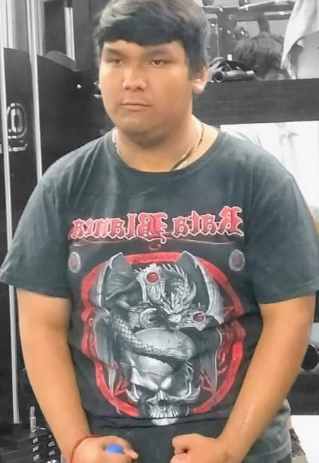

📅 Mis primeros años
Nací en Uriangato el 7 de mayo del 2008 por la tarde en el hospital regional. Desde pequeño me gustaron los videojuegos. Tuve una buena infancia cuando entré a la escuela a los 6 o 7 años en segundo grado de la primaria. Me rompí un brazo y me llevaron a un hospital para acomodarme el hueso pero el doctor que me atendió me lo dejó chueco. Pasaron meses y cuando me quitaron el yeso, mi brazo estaba mal y tuvieron que hacerme una cirugía para acomodar el hueso. En la secundaria me fue perfecto, no me molestaban, tenía buenas calificaciones. Cuando pasé a la prepa siguió igual, aún me siguió yendo bien, pero cuando entré a 2do semestre en la materia de codificación con el maestro Luis Germán no me fue muy bien que digamos. Estuve a punto de recursar pero apenas alcancé a aprobar. En todo el transcurso de la prepa no me ha tocado recursar y espero que siga así.
🎮 Pasatiempos favoritos
Mis pasatiempos favoritos son los videojuegos. Soy buenísimo en todos los juegos. En este año me he pasado 12 juegos completos y los he repetido como unas 2 o 3 veces. También me gusta dibujar.
🏆 Deportes y Películas
En los deportes que he practicado es en el gimnasio, como 2 años anduve. Mis películas favoritas son las de Marvel
como la de Iron Man la he visto más de 20 veces. También me gustan las de Comedia y las películas de Terror.
🎓 Qué me gustaría estudiar
Carreras en el ITSUR:
- Ing. Semiconductores
- Ing. Electrónica
- Ing. Sistemas computacionales
📸 Mi foto

Una foto reciente mía